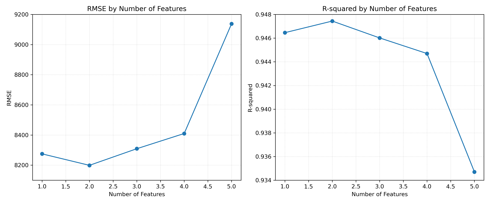
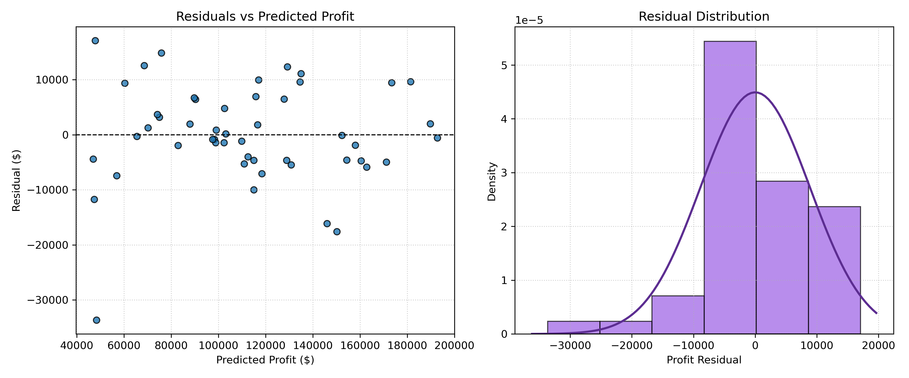

透過前向逐步挑選（SFS）演算法，評估 1 到 5 個特徵在多元線性回歸下的 RMSE 與 R² 表現：
| 特徵數量 (k) | 加入特徵 | RMSE (越低越好) | R² Score (越高越好) | 說明 |
|---|---|---|---|---|
| 1 | R&D Spend | 8274.52 | 0.9465 | 研發支出為最具決定性的單一變數 |
| 2 | + Marketing Spend | 8198.24 | 0.9475 | 🌟 全域最佳組合（最低 RMSE，最高 R²） |
| 3 | + State_New York | 8311.20 | 0.9460 | 引入多餘特徵，模型開始過度擬合 (Overfitting) |
| 4 | + Administration | 8410.65 | 0.9447 | 管理費用與利潤關聯性低 |
| 5 | + State_Florida | 9150.12 | 0.9347 | 全特徵模型誤差顯著放大 |

針對最佳 2 特徵回歸模型進行殘差檢驗，驗證回歸分析核心假設：
